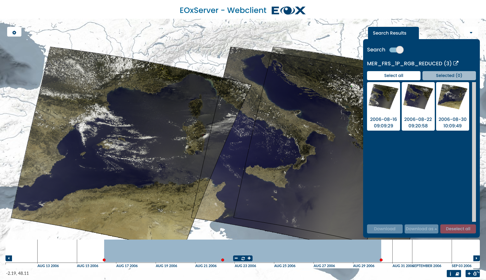

EOxServer¶
About¶
EOxServerは、大規模な地球観測(EO)データアーカイブとメタデータをオープンスタンダードで提供するサーバです。
Earth Observation data currently supported includes 2D raster data generally acquired using sensors on satellites or aircrafts and including information about the time of acquisition and the footprint on planet Earth. It is typically used to monitor Earth’s natural and built environment.
EOxServerは、Python、 MapServer 、 Django/GeoDjango、 GDAL 、 PROJ.4 と SpatiaLite あるいは PostGIS データベースを含むソフトウェアからなるオープンソースのスタック上に構築されています。
{kind=link}
主要機能¶
- EOデータを表示、フィルタ、サブセット作成そしてダウンロードができます
- EOデータアーカイブを登録する
- Webベースのコマンドライン管理インターフェイス
- Open Geospatial Consortium (OGC) 経由でデータを公開する
- Web Coverage Service (WCS) 1.0, 1.1 and 2.0 & proposed EO-WCS
- Web Map Service (WMS) & EO-WMS
- 提案されているWCSの拡張:GeoTIFFエンコーディング、定義済み投影法(CRS)、スケーリング、補間。
- サポートされているプロトコルは:KVPとXML/POST(SOAP2POSTプロキシと一緒に使用してXML/SOAPも提供)
- 次の形式とグループ分けを使用してパブリッシュする:
- gmlcov:RectifiedGridCoverageから派生した2-D EOカバレッジ
- gmlcov:ReferenceableGridCoverageから派生した2-D EOカバレッジ
- 時系列などのEOカバレッジのコレクションとしてのデータセットシリーズ
- 修正EOカバレッジのステッチ済みモザイク(contributingFootprintを含む)
- サポートされているカバレッジフォーマット:
- GeoTIFF
- GDALライブラリでサポートされているフォーマット
実装されている標準規格¶
- WCS, EO-WCS
- WMS, EO-WMS
- WPS
- GML, GMLCOV, EO-O&M
- OpenSearch
詳細¶
Webサイト: https://docs.eoxserver.org/en/stable/
ライセンス: MIT-style license
ソフトウェアバージョン: 1.0.0beta1
対応プラットフォーム: Linux, Windows, Mac
API インターフェイス: Python
サポート: https://docs.eoxserver.org/en/latest/users/basics.html#where-can-i-get-support